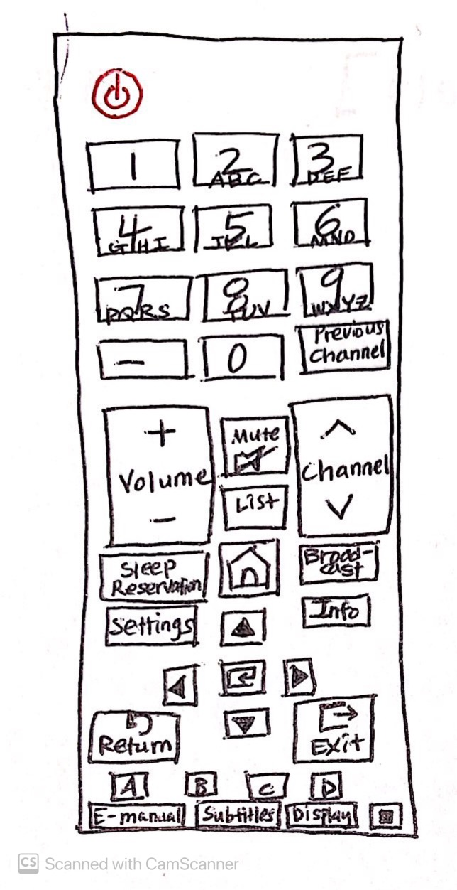
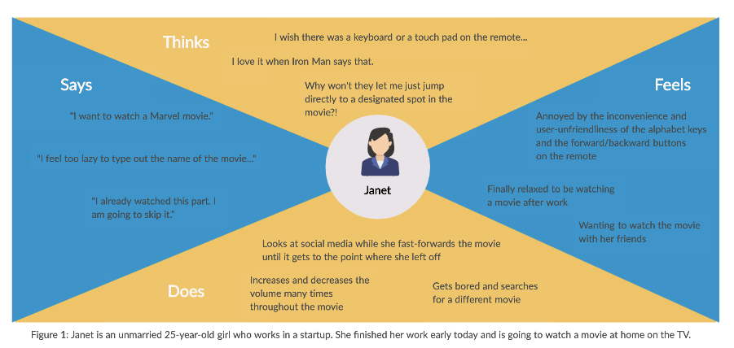
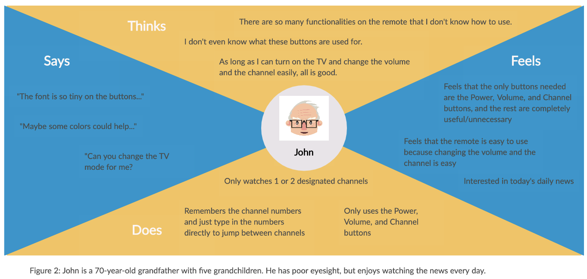
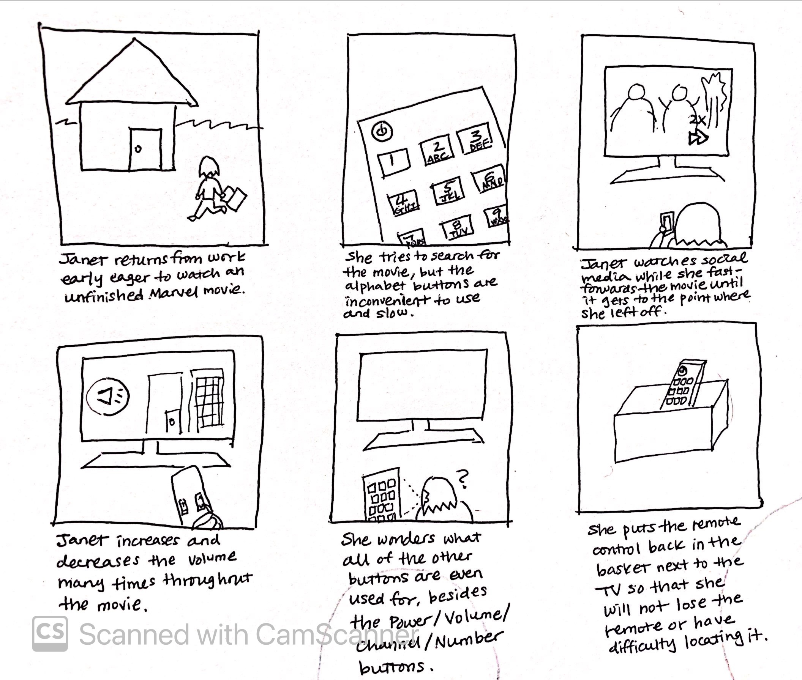

Personas and Storyboarding: Remote Control
Description

Interface in public view chosen: Remote Control for TV
The remote control interacts with the TV and controls what appears on it. The remote has various buttons, including the Power, Channel, Volume, Number, Directions, and Select buttons, which can be used to request various actions on the TV. Users can push certain buttons based on their needs:There are also various other buttons that are not frequently used as well.
The interface tries to solve the difficulty users might experience in controlling the TV and the inconvenience of some buttons. It aims to render all buttons self-explanatory, easy to use and find, intuitive, and straightforward. It places users' convenience in learning and using as its top priority.
Observations & Interview
In order to understand the user interaction and experience with the chosen interface, I chose three different users to study and made objective observations about their interactions with the remote control. The chosen users are: User 1 (Dad), User 2 (Mom), User 3 (Grandmother).Observations
Interview
Questions
- What are your expectations for the remote control interface?
- What is your experience with the remote control interface?
- What are your motives for using the remote control interface?
- Have you experienced any challenges or difficulties when using the remote control interface?
Responses
- User 1 (Dad):
- His expectations for the remote are that it makes it easy to change the volume and the channel, input alphabets, and move between different points in a video. He expects the remote to also have Directions/Select/Exit buttons and expects the buttons to be placed in locations that are easy to find and press.
- He says that the Power button is positioned at the very top and colored red, which is easy to find, the Volume and Channel buttons are very big and have bumps which make them easy to press, and the Directions/Select/Exit buttons are in convenient locations as well.
- However, he emphasizes the complete needlessness of the numerous buttons that are rarely used or have no use at all. He wishes that the remote would consist only of some important buttons and remove the rest to make the interface easier to learn and use through minimalism.
- Also, he points out the difficulty in inputting text and wishes the remote had a touch screen or a keyboard like the one on a BlackBerry phone. Also, he says that it is very difficult to navigate between different points in a video.
- He stresses that the most likely reason for this is that, although TV remotes were originally built to simply change the channel and the volume and not designed to search for videos or navigate through them, the modern use of TV has changed significantly. The changes involve using the TV to watch Netflix or YouTube besides the standard TV channels. Thus, the use and expectations for the remote have naturally changed as well to fit the users' changed needs. He wishes that the remote would be built in accordance with these changes to make typing keywords and navigating through videos easier.
- User 2 (Mom):
- She says that the remote has a convenient design for turning the TV on/off and changing the volume and the channel. She says the important buttons, including the Number buttons, are easy to use as well.
- However, she acknowledges the difficulty in typing words using the number-alphabet matching buttons on the remote, which often stops her from watching Netflix or YouTube on TV. She also wishes that the remote was designed to enable her to conveniently select a point in the video she wishes to skip to, without having to move through the progress/status bar herself or fast-forward and rewind the video.
- She rates her overall experience with the interface as being positive, and her motives for using the remote are to control the TV when watching YouTube and Netflix.
- User 3 (Grandmother):
- She states her motives for using the interface as to turn the TV on/off.
- Since she is unfamiliar with technological devices, she has experienced various challenges while using the remote. Moreover, the inconvenience of the buttons on the remote control and its user-unfriendliness have stopped her from watching TV. She no longer likes to watch TV because of the stress she gets from using the remote. She states that it is difficult and challenging to navigate through channels. She says it is fortunate that she uses it to watch only one or two certain daily news channels.
- Also, she has noticed that the remote is very easy to lose -- it is often easily hidden beneath a couch or a blanket, as the remote itself is too small and unremarkable. She says that keeping it in a designated location certainly helps for now but that some additional functionalities like location tracking would be very useful.
- She remarks that her overall experience with the interface is negative and that she would like it if the remote could be replaced either with a mobile app on the phone that can be connected to the TV or with a voice-recognizing system that she can talk to and make commands through.
Personas


Storyboard: Janet
